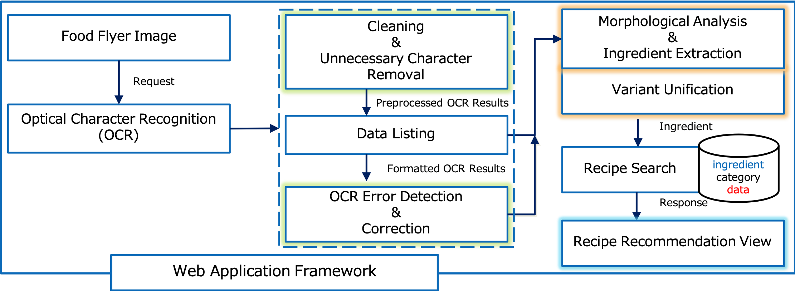

青山学院大学
Making everyday dishes is a vital part of everyday lives. This paper proposes a novel system that takes a food flyer of a grocery store to automatically recommend popular recipes containing ingredients appeared in the flyer. Based on optical character recognition (OCR) technique, our algorithm extracts the ingredient names from the words in the flyer by matching them with a dedicated ingredient dictionary. The extracted ingredients are used as queries to retrieve cooking information from a recipe database. Newly proposed word correction scheme using multiple similarity measures robustly corrects misrecognized characters from OCR to boost the extraction performance. We conduct both quantitative and subjective evaluation to confirm the effectiveness of the proposed method. The subjective evaluation reveals that the proposed system is rated as "effective" by more than 90% of the participants.
